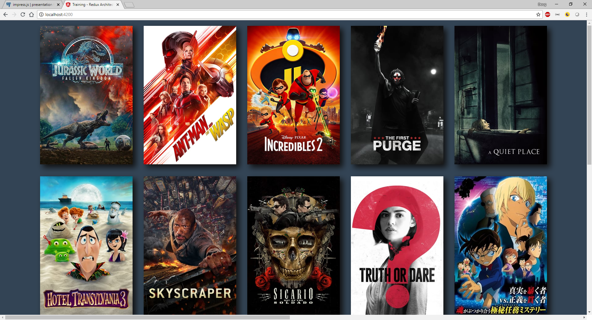

Redux
Separate the concerns!
Good morning everyone! [Introduce myself, experience, history with Landmark]
Who Am I?

- Working since 1998
- Over 15 years of experience
- Worked with many technologies
- WPF with MVVM using NHibernate
- Today using .NET Core with Entity Framework and now Dapper/GraphQL.
Redux

- How many of you have a garage or work space that looks like this?
- How many of your software designs feels like this sometimes?
- Front-end development has had so many changes lately, it's very easy for your front-end code to look like this.
Redux

- Redux is here to help separate concerns
- How many people are familiar with DRY programming?
- How many people are familiar with Separation of Concerns?
- See article on Separation of Concerns
Overview
Let's build a movie browsing web site for the latest releases!
- I thought it would be best to demonstate some key concepts by having an app that we can all play with
- About a day to put this app together
- Uses themoviedb.org API to retrieve data
Front-end Design Concerns
Front-end Design Concerns
- UX - what the user sees
Front-end Design Concerns
- UX - what the user sees
- Server Data - server-side data (may not be in our control)
Front-end Design Concerns
- UX - what the user sees
- Server Data - server-side data (may not be in our control)
- Client State - client-side data, used to display the view
UX
Server Data
In this example, server data comes from themoviedb.org - which we query from an API:
HTTP GET https://api.themoviedb.org/3/movie/now_playing
Client State
Client-side data looks something like this...
{
"searchResults": {
"results": [{
"vote_count": 497,
"id": 363088,
"video": false,
"vote_average": 7.1,
"title": "Ant-Man and the Wasp",
"popularity": 183.122,
"poster_path": "\/rv1AWImgx386ULjcf62VYaW8zSt.jpg",
"original_language": "en",
"original_title": "Ant-Man and the Wasp",
"genre_ids": [28, 12, 14, 35, 878],
"backdrop_path": "\/6P3c80EOm7BodndGBUAJHHsHKrp.jpg",
"adult": false,
"overview": "As Scott Lang awaits expiration of his term of house detention, Hope van...",
"release_date": "2018-07-04"
},
{ ... }, // Collapsed for brevity
{ ... },
...
],
"page": 1,
"total_results": 924,
"dates": {
"maximum": "2018-07-15",
"minimum": "2018-05-28"
},
"total_pages": 47
}
}
How should you design an app?
MVC
"The traditional way"
Front-end engineers looked toward reliable methods to separate concerns. The "MVC" pattern has existed since the late 70's. It worked wonderfully with thin clients, and has been a staple for developers ever since.
Most companies used some variety of MVC (MVVM, MVP), but engineers kept running into big problems:
- Complexity
- Performance
- Scalability
- I can post this video to slack if anyone wants it: https://youtu.be/nYkdrAPrdcw?t=7m17s
Flux
"The Facebook way"
Facebook's answer to the MVC complexity was a design pattern they named "Flux". It moves away from MVC completely and replaces it with the following concepts:
- Actions
- Reducers
- Store
- Actions are what they sound - are in charge of notifying others when events are happening in the application.
- Reducers - are named after the JavaScript Array `reduce` method, they are in charge of changing application state.
- Store - is where the application's state is stored.
Wait, aren't we talking about Redux?

- In practice, it looks like this.
Wait, that's LESS complex?
MVC only has 3 pieces, this has 4!
- Redux comes with its own complexity, so why should we go with it?